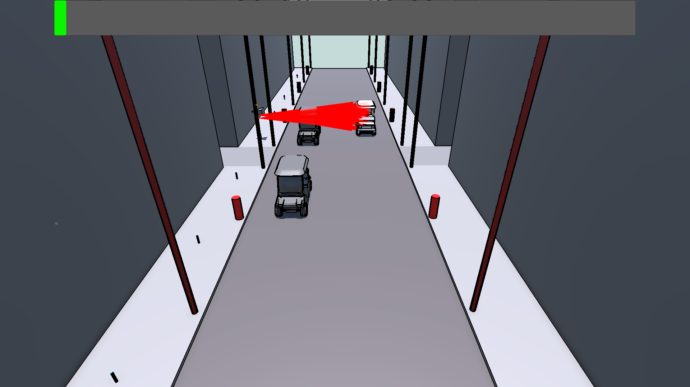
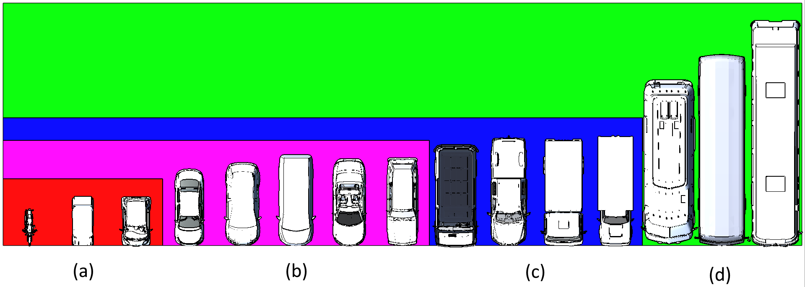
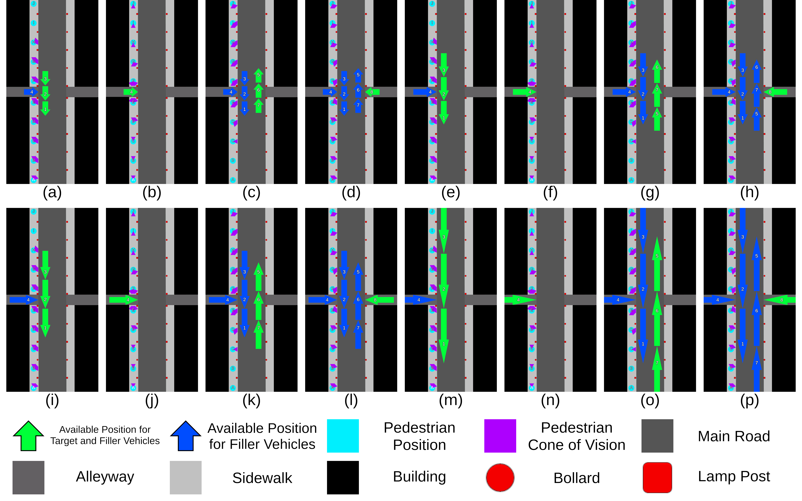
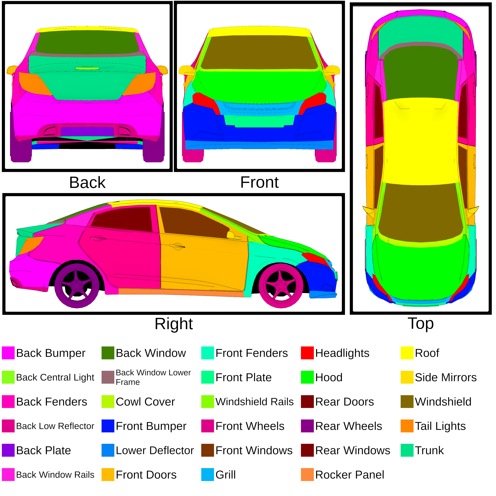
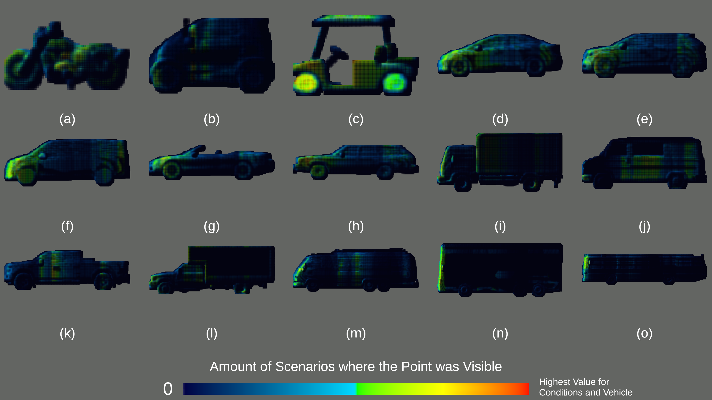
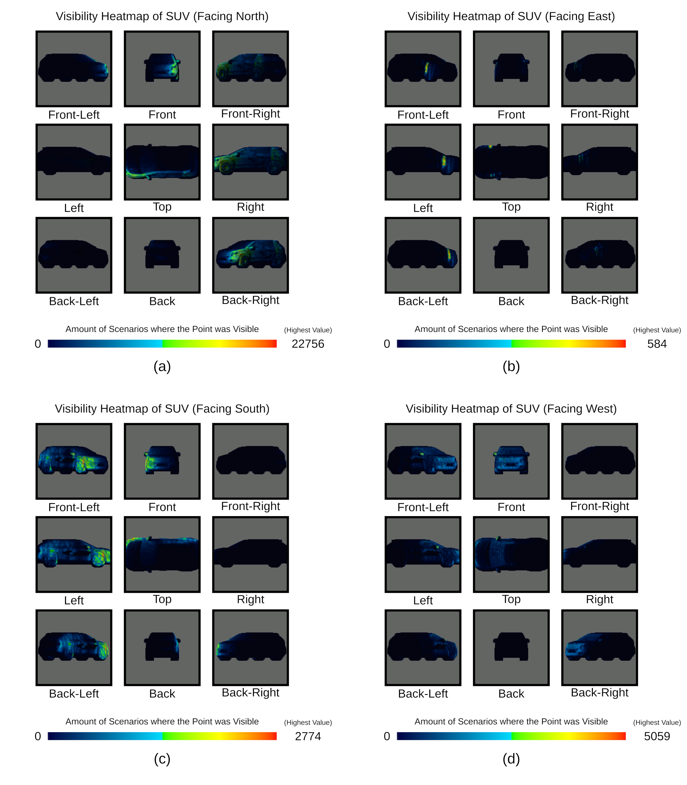
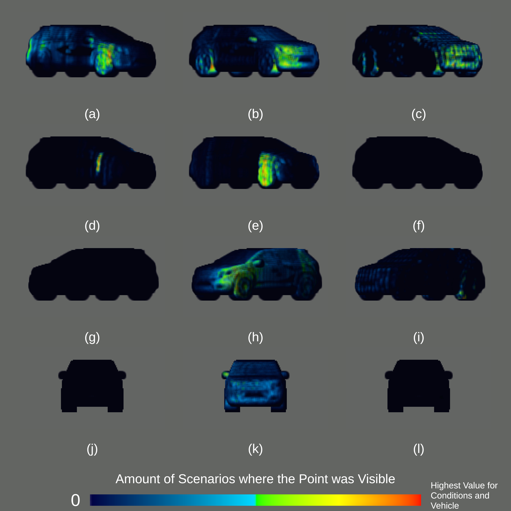
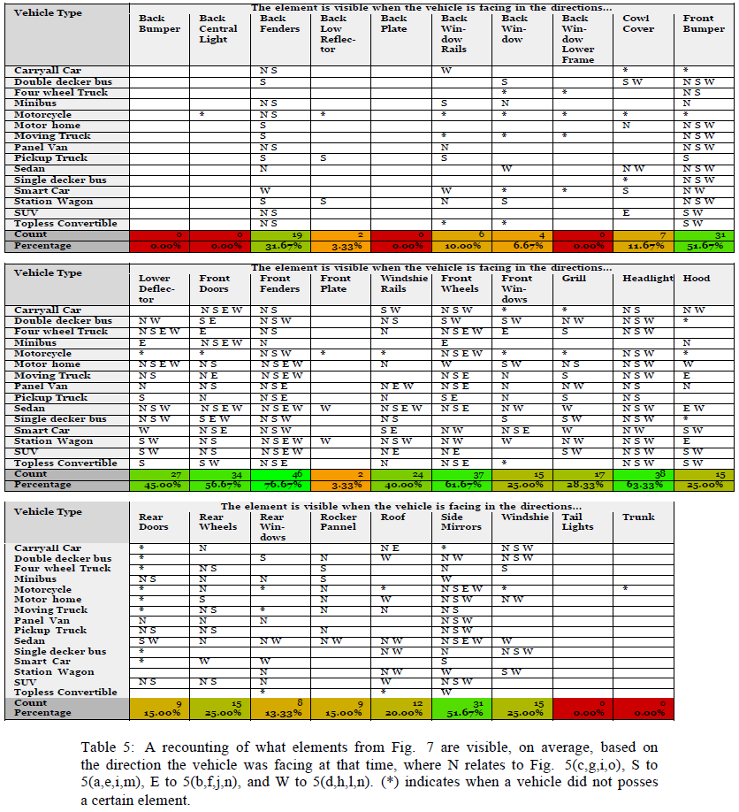

Screenshot of the simulation running. Red lines indicate the trajectory of the ray-casts that have hit the Target Vehicle.

Top-Down View of the fifteen vehicles used in the simulations. Color denotes the category of each vehicle: (a) Small (b) Medium (c) Large (d) Extra Large

Diagram illustrating all sixteen setups based on the Target and Filler Vehicle available positions (green arrows in (a) to (p)), exclusive Filler Vehicle available positions (blue arrows in (a) to (o)), vehicle type ((a) to (d) for Small, (e) to (h) for Medium, (i) to (l) for Large, (m) to (p) for Extra Large) , Camera Positions ((a to p)(A to J)), and Camera Directions (Marked in purple).

llustration of the different exterior parts of a sedan, and the terminology used to refer to each

Illustration of the different exterior parts of a sedan, and the terminology used to refer to each.

Comparison of the right side of the heatmap of all vehicle types that is produced when these are driving North. (a) Motorcycle (b) Smart Car (c) Carryall Car (d) Sedan (e) SUV (f) Panel Van (g) Topless Convertible (h) Station Wagon (i) Four Wheel Truck (j) Minibus (k) Pickup Truck (l) Moving Truck (m) Motor Home (n) Double Decker Bus (o) Single Decker Bus

Results showing how many times a Grid Point was recorded, across all scenarios where the vehicle was a SUV driving: (a) North, on the right side of the virtual environment; (b) East, out of the alleyway on the left side of the virtual environment; (c) South, on the left side of the virtual environment; (d) West, out of the alleyway on the right side of the virtual environment.

Results showing the heatmap of the SUV at each facing direction, when the observer is at each distance threshold. (a,d,g,j) 0m to 5m; (b,e,h,k) 5m to 25m; (c,f,i,l) 25m to 75m.
